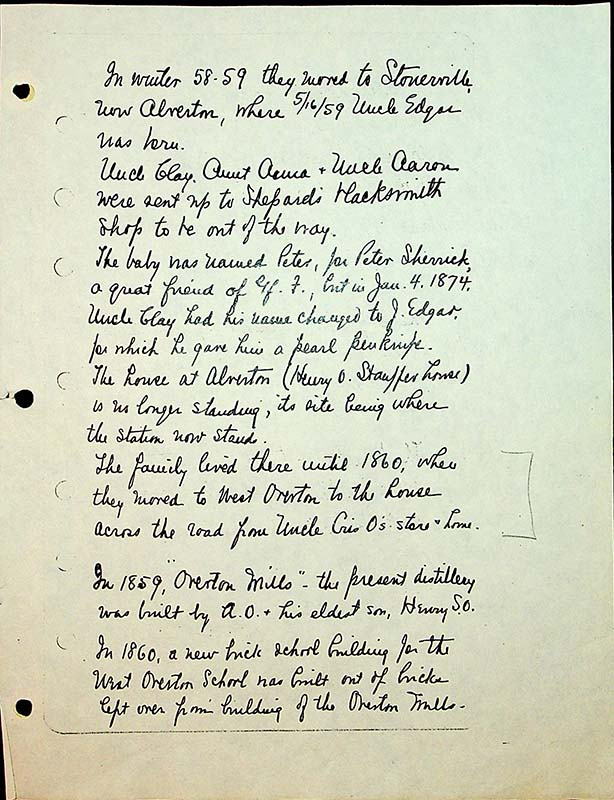

In winter 58-59 they moved to Stonerville now Alverton, where 5/16/59 Uncle Edgar was born.
Uncle Clay, Aunt Anna, & Uncle Aaron were sent up to Shepard’s blacksmith shop to be out of the way.
The baby was named Peter, for Peter Sherrick, a great friend of Gf. Frick, but in June 4, 1874, Uncle Clay had his name changed to J. Edgar, for which he gave him a pearl penknife.
The house at Alverton (Henry O. Stauffer house) is no longer standing, its site being where the station now stands.
The family lived there in 1860, when they moved to West Overton to the house across the road from Uncle Cris O’s store and home.
In 1859, “Overton Mills” the present distillery was built by A.O. and his eldest son, Henry S O.
In 1860 a new brick school building for the West Overton school was built out of bricks left over from building of the Overton Mills.